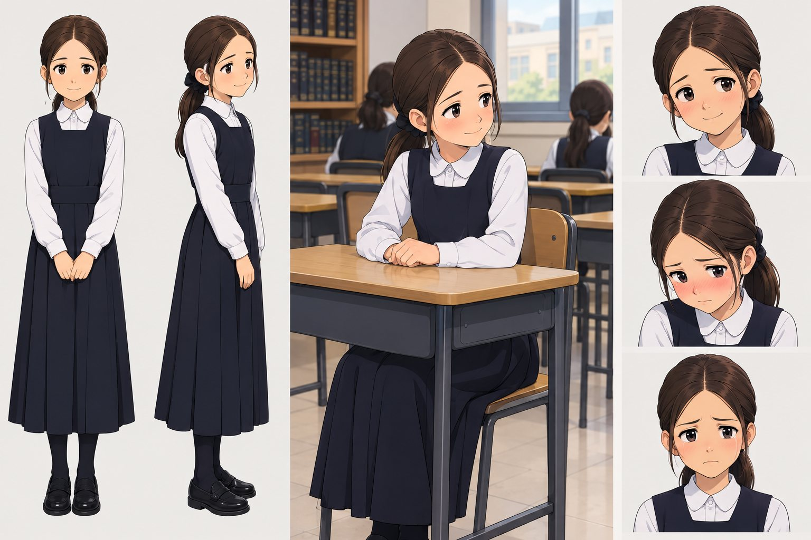
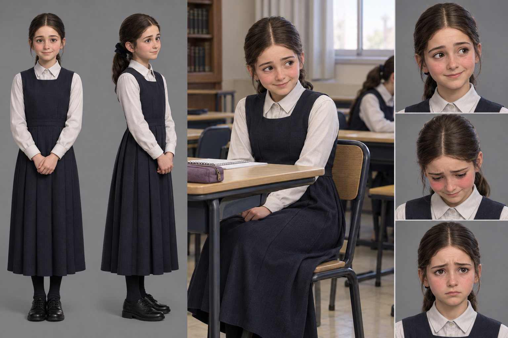
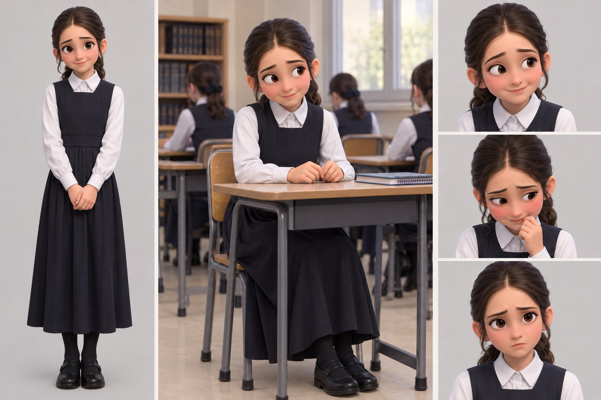

דמות מצוירת עם תנועה
ציור בסגנון איור. הפה, העיניים והרגש משתנים לפי הקול, והדמות זזה בעדינות: ראש, שיער ונשימה.

הדמיה לתרגול שיחה עם תלמידה, לבנות הסמינר, לפני ההתנסות המעשית בכיתה.
זוהי טיוטה ראשונה בלבד, שנועדה להציג את כיוון העבודה. בשלב זה נועה מדברת, מזיזה את פיה ומביעה רגשות בסיסיים. בהמשך הדמויות ינועו הרבה יותר: תנועות ראש, ידיים וגוף, ישיבה ליד שולחן והצבעה. ההבעות ישתפרו, והמראה יותאם לפי בחירתכם ולפי הצורך.
נועה היא תלמידה וירטואלית בת 12. היא ביישנית ומדברת בעברית, בקול. המורה המתרגלת מדברת איתה, ונועה עונה. הפה שלה זז לפי הדיבור, והפנים מביעות רגש: מבוכה, כעס, שמחה וביישנות.
בסרטונים: כיוון א׳, דמות מצוירת עם תנועה. הפה, העיניים והרגש משתנים לפי הקול.
ציור בסגנון איור. הפה, העיניים והרגש משתנים לפי הקול, והדמות זזה בעדינות: ראש, שיער ונשימה.

דמות תלת־ממדית שנראית כמו ילדה אמיתית. אפשר להתאים את המראה, הלבוש והסביבה לפי הצורך.

סרטון בדיקה יתווסף בקרוב
דמות תלת־ממדית בסגנון סרט מצויר. הבעות ברורות ותנועה נעימה.

התמונות הן רישומי רעיון לפני שלב הבנייה.
לנועה נבחר קול עברי טבעי, המתאים לגילה ולאופייה.
המערכת מקשיבה לקול ומזהה איזה צליל נאמר: א, אי, או, מ, ס. לפי הצליל היא בוחרת את צורת הפה, כ־60 פעמים בשנייה. זה עובד היטב בעברית, גם בלי ניקוד.
לכל תשובה מותאם רגש. הרגש משנה את הבעות הפנים, ובהמשך גם את תנועות הגוף.
המורה מדברת למיקרופון. המערכת מבינה את דבריה ועונה בקולה של נועה, בתוך פחות משנייה.